Руководство
пользователя
Как поставить задачу словами и получить проверяемый результат в системах, которыми вы уже пользуетесь. Для менеджера, аналитика и любого, кто работает с ABOP каждый день.
Все снимки экранов в этом руководстве сделаны с работающей системы на реальных данных демонстрационного контура. Оранжевой рамкой и номером отмечены поля, о которых идёт речь в тексте рядом.
РАЗДЕЛ 1Как читать это руководство
Руководство устроено как путь: от первого запуска до тонкой настройки. Если вы хотите просто начать работать — читайте разделы 2–6, этого достаточно для ежедневных задач.
Хочу начать сегодня
Разделы 2, 4 и 5. Двадцать минут чтения, и вы поставите первую задачу.
Хочу собрать своего агента
Разделы 11 и 12: сборка на канве и каталог навыков.
Отвечаю за данные
Раздел 13 и «Руководство администратора», разделы 7–8.
Слежу за расходом
Разделы 14 и 16: кабинет, квоты, бюджеты и лимиты.
Обозначения
| Ctrl + K | клавиши, которые нужно нажать |
roadmap-fact | идентификатор навыка, агента, сущности или поля — так они выглядят в интерфейсе |
| «Новый прогон» | надпись на кнопке или в поле интерфейса |
| Данные → Рецепты | путь по разделам: сначала раздел, затем вкладка |
РАЗДЕЛ 2ABOP за пять минут
ABOP — рабочая среда, в которой ИИ-агенты выполняют ваши задачи по проверяемым методикам, на ваших данных и в границах, которые вы задали. Не чат, который «что-то расскажет», а исполнитель, который приносит результат туда, где вы работаете.
Шесть понятий, которых хватит на всё
- Навык
- Методика одной работы: как сверить план с фактом, как проверить проводки в 1С, как собрать дайджест почты. У навыка есть текст методики, схема результата и объявленный контракт — что ему нужно на входе и что он отдаёт. В поставке 58 навыков.
- Агент
- Один или несколько навыков, собранных под конкретную работу, с именем, отделом и границами полномочий. «Контролёр проектов», «Аудитор данных 1С» — это агенты.
- Прогон
- Один запуск агента: агент взял данные, применил методики, сделал находки, доставил результат. У каждого прогона есть идентификатор, стоимость, время, вердикт и полный след того, что он делал.
- Находка
- Один конкретный вывод: пункт сорван на 35 дней, проводка без документа-основания, счёт задвоен. Находка всегда привязана к записи в данных — её можно открыть и проверить.
- Предмет работы
- То, ПО ЧЕМУ работает агент: конкретный проект, договор, контрагент, период. Если вы управляете тремя проектами, агент спросит, какой именно имеется в виду, а не смешает все три.
- Подтверждение (HITL)
- Всё, что уходит наружу — письмо, задача в трекере, страница в вики — ждёт вашего «ок». Человек в контуре, а не после факта.
Как это выглядит в работе
- Вы описываете задачу своими словами «Сравни дорожную карту проекта PRJ-2451 с фактическим исполнением по отчётам подрядчиков: где рвутся сроки, почему и что предлагают подрядчики».
- Среда подбирает исполнителя Разбирает фразу по словам и по смыслу, находит подходящего агента и показывает карточку: кто это сделает, насколько уверенно подобран, куда положить результат.
- Уточняет предмет, если он неоднозначен Если проектов несколько, а в задаче не сказано какой — спросит один раз и запомнит выбор на время разговора.
- Выполняет и показывает след Берёт данные из ваших систем, применяет методику, считает числа кодом, а моделью объясняет. В результате видно: сколько этапов, сколько данных, что именно запрашивалось, сколько стоило.
- Доставляет результат В чат, письмом, задачей в трекере или страницей в вики — как настроено у агента. Всё, что уходит наружу, сначала показывается вам на подтверждение.
РАЗДЕЛ 3Два рабочих места: десктоп и веб
Одна платформа, две точки входа. Десктоп — для ежедневной работы: поставил задачу, получил результат. Веб — для сборки, настройки и разбора: как устроен агент, откуда данные, что было в прогоне.
| Что нужно сделать | Десктоп | Веб |
|---|---|---|
| Поставить задачу словами | да — основной путь | да, через «Новый прогон» |
| Посмотреть результат прогона | карточка в чате + раздел «Прогоны» | да — с полным следом и сравнением |
| Подтвердить отправку наружу | да — прямо в чате | да |
| Приложить файл к задаче | да — перетащить в окно | через «Загрузку» |
| Собрать своего агента | — | да — канва «Граф» |
| Посмотреть и настроить навык | список навыков | да — карточка навыка целиком |
| Завести источник данных | раздел «Источники» (просмотр) | да — рецепты и коннекторы |
| Настроить лимиты и модель | — | да — «Настройки» |
| Управлять доступом | — | да — «Админ-панель» |
| Сделать задачу регулярной | да — кнопка на карточке прогона | да — триггер на канве |
РАЗДЕЛ 4Начало работы в десктопе
Десктоп-клиент — окно на вашем компьютере. Внутри него работает локальный движок, который общается с сервером ABOP от вашего имени. Всё, что вы видите, приходит с сервера под вашими правами: чужих агентов и чужих данных в окне не будет.
4.1 Установка
- Получите установщик
Файл
ABOP-Desktop-Setup-<версия>.exeвыдаёт администратор или он лежит на странице релизов. Windows 10/11, 64 бита. Права администратора не нужны — установка идёт в профиль пользователя. - Запустите установщик Мастер поставит приложение и создаст ярлык «ABOP Desktop». Внутрь пакета уже входит локальный движок: ничего доустанавливать не требуется.
- Откройте приложение При первом запуске окно спросит разрешение на локальное соединение — это движок внутри самого приложения, наружу он ничего не открывает.
- Войдите Кнопка «Войти в ABOP» справа вверху открывает страницу входа вашей организации. После входа окно закроется само, а в шапке появится ваше имя и отдел.
4.2 Окно целиком
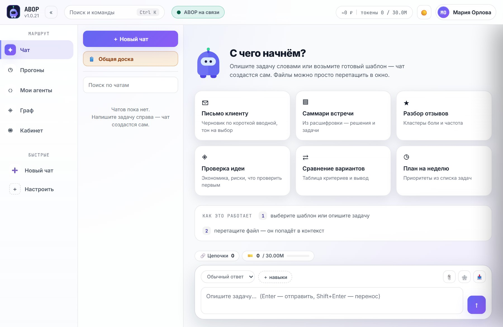
- 1Разделы. Чат, Прогоны, Источники, Мои агенты, Кабинет, Распознать. Набор разделов зависит от ваших прав.
- 2Новый чат. Каждая задача — отдельный разговор. Название подставится само по первой фразе.
- 3Поле задачи. Enter — отправить, Shift+Enter — перенос строки.
- 4«+ навыки». Подсказать среде, какие именно методики применить, если вы уже знаете ответ.
- 5Светофор связи. Зелёный — сервер отвечает. Красный — нажмите, и откроется окно с причиной.
В шапке справа — расход и токены за период, переключатель светлой и тёмной темы, ваше имя с отделом. Отдел важен: он определяет, какие системы и данные видят ваши агенты.
4.3 Светофор связи
Индикатор рядом с поиском всегда показывает одно из четырёх состояний.
| Индикатор | Что значит | Что делать |
|---|---|---|
| ABOP на связи (зелёный) | Сервер отвечает, прогоны запускаются | Работать |
| проверяю связь… (жёлтый) | Идёт проверка после запуска или обрыва | Подождать несколько секунд |
| нет связи с ABOP (красный) | Сервер не ответил | Нажать на индикатор — покажет адрес сервера, код ошибки и время последней удачной попытки |
| модель недоступна (оранжевый) | Сервер жив, но модель не отвечает | Сообщить администратору: он переключит модель в «Настройки → Модели» |
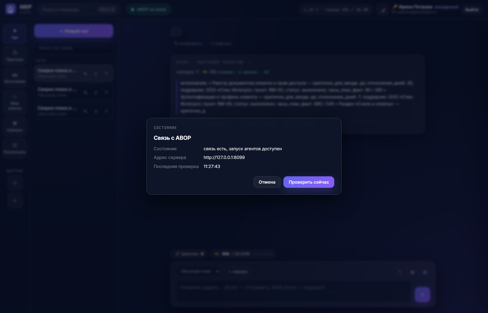
РАЗДЕЛ 5Первая задача: от фразы до результата
Разберём один сквозной пример: руководитель проектов хочет понять, где рвутся сроки по проекту и почему. Этот же путь работает для любой другой задачи.
5.1 Опишите задачу
Пишите так, как поставили бы задачу человеку. Не нужно знать названия агентов и навыков.
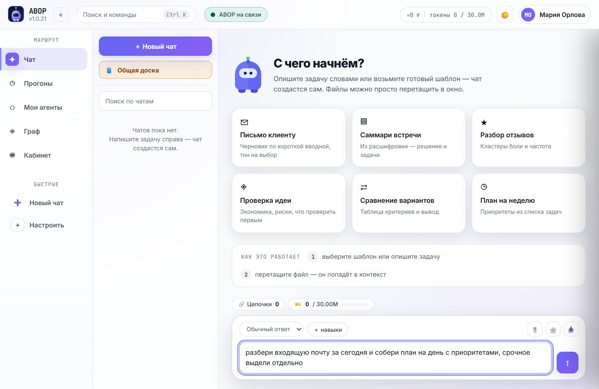
- 1Текст задачи. Чем конкретнее предмет (номер проекта, период, контрагент), тем меньше уточняющих вопросов.
- 2Режим ответа. «Обычный ответ» — для большинства задач; «Код и таблицы» — когда нужен разбор выгрузки; «Исследование» — для длинных разборов.
- 3+ навыки. Ручной выбор методик, если вы точно знаете, что применить.
Хуже: «Посмотри, как дела с проектами» — среда не поймёт, какой проект и что считать «делами», и задаст несколько уточняющих вопросов.
5.2 Карточка решения: кто это сделает
Среда разбирает фразу двумя способами сразу — по словам и по смыслу — и предлагает исполнителя.
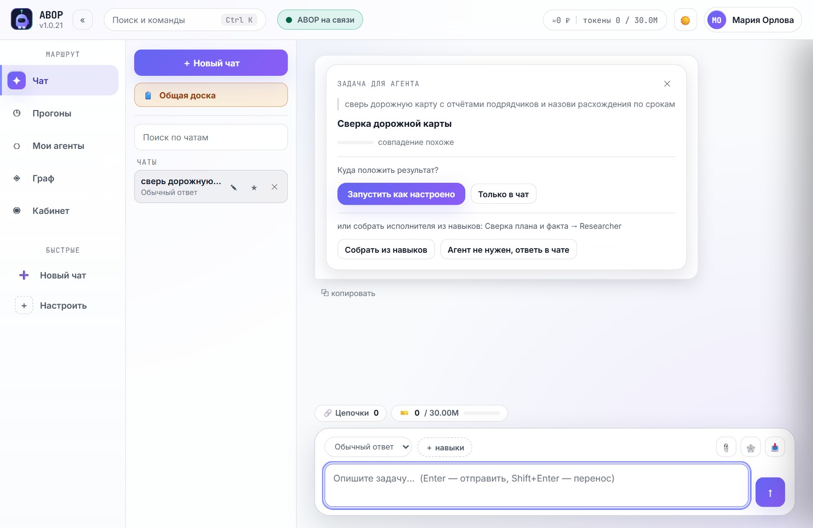
Что в карточке:
- Задача для агента — как среда поняла вашу фразу. Если поняла неверно, проще переформулировать, чем спорить.
- Имя агента и отдел — кто будет работать. Отдел определяет, к каким системам у него есть доступ.
- Совпадение — насколько уверенно подобран агент, с разбивкой «по словам» и «по смыслу». Низкая уверенность — повод проверить, того ли агента предложили.
Три кнопки:
| Запустить как настроено | Агент отработает и доставит результат туда, куда у него настроена доставка: в чат, письмом, задачей в трекере. Внешние действия всё равно спросят подтверждения. |
| Только в чат | То же самое, но результат останется в разговоре и никуда не уйдёт. Удобно, когда вы проверяете агента. |
| Агент не нужен, ответь в чате | Обычный ответ модели без данных и методик. Для уточняющих вопросов и черновиков. |
5.3 Уточнение предмета работы
Если у агента объявлен предмет работы (проект, договор, контрагент), а из фразы он не следует однозначно, среда покажет карточку выбора: список подходящих записей с пояснением, откуда они взяты. Выбранный предмет действует на всю дальнейшую работу в этом разговоре.
5.4 Карточка прогона
Когда агент отработал, в разговоре появляется карточка результата. Это не пересказ — это выжимка настоящего прогона, к которому можно перейти целиком.
| Элемент карточки | Что показывает |
|---|---|
| Агент и отдел | кто выполнял работу |
| Находок | сколько конкретных выводов сделано |
| Токены | сколько израсходовано на этот прогон |
| Конверт | «в рамках» — агент не вышел за разрешённые границы; иначе будет сказано прямо |
| Автономия | уровень самостоятельности, с которым агент работал (A0–A4) |
| Список находок | первые находки текстом; остальные — в разделе «Прогоны» |
| Доставка | куда ушёл результат и в каком состоянии: отправлено, черновик, ждёт подтверждения |
Под карточкой — три кнопки:
- Открыть прогон — полный разбор: все находки, все шаги, стоимость, данные.
- Отчёт PDF — готовый документ по шаблону отчёта агента.
- Сделать регулярной — превратить эту задачу в расписание (см. раздел 17).
5.5 Файлы в задаче
Перетащите файл в окно — он попадёт в контекст разговора. Поддерживаются текстовые документы, таблицы и PDF. Содержимое файла станет частью задачи и будет помечено как приложенный документ — агент отличает его от данных ваших систем и от своей методики.
РАЗДЕЛ 6Карточки, которые вы будете видеть
В разговоре встречаются пять типов карточек. У всех одна логика: слева — суть, справа — что с этим можно сделать, внизу — на чём основано.
Решение
Кто выполнит задачу и куда положить результат. Появляется сразу после вашей фразы.
Предмет работы
Выбор проекта, договора или контрагента, если из фразы он не следует однозначно.
Цепочка
Предложение связать несколько агентов, когда задача распадается на этапы.
Прогон
Результат работы агента: находки, доставка, затраты, вердикт.
Подтверждение
Очередь внешних действий, которые ждут вашего «ок»: письма, задачи, страницы.
Шкала уверенности
На карточках решения и цепочки есть полоса уверенности. Читается так:
| совпадение точное | агент подобран однозначно — и слова, и смысл сошлись |
| совпадение похоже | подобран уверенно, но стоит взглянуть на имя агента |
| совпадение слабое | среда не уверена: проверьте агента или переформулируйте задачу |
РАЗДЕЛ 7Разделы десктопа
7.1 Прогоны
Журнал всей работы агентов — независимо от того, из какого разговора она была запущена и кем.
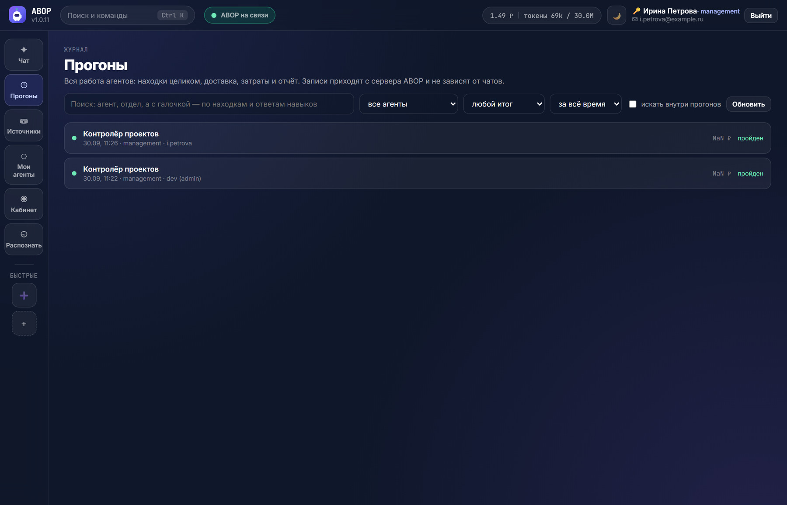
Фильтры сверху:
- Поиск — по имени агента и отделу. С галочкой «искать внутри прогонов» поиск идёт по самим находкам и ответам навыков: так находится прогон, в котором упоминался конкретный договор или номер пункта.
- Все агенты — сузить до одного исполнителя.
- Любой итог — только пройденные вердикты или только с замечаниями.
- Период — сутки, неделя, месяц, всё время.
Карточка прогона открывается по нажатию и содержит вкладки: находки, навыки, доставка, метрики. Там же — кнопки отчёта и сравнения с предыдущим прогоном того же агента.
7.2 Источники
Что агент видит под вашими правами: подключённые системы и рецепты, которые превращают их данные в записи для агентов.
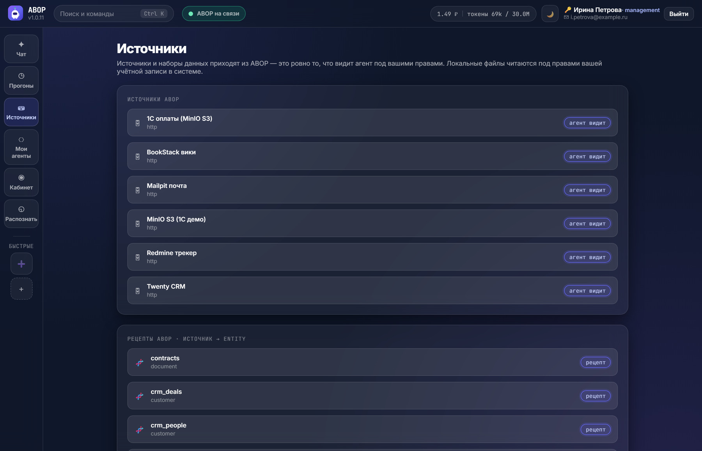
Отметка «агент видит» означает, что система входит в область доступа вашего отдела. Если нужной системы в списке нет — это вопрос к администратору, а не сбой.
7.3 Мои агенты
Агенты, доступные вам: собранные вами и общие для отдела. У каждого видно семью (отдел), роль, версию и то, из каких навыков он собран. Отсюда агента можно запустить напрямую, не описывая задачу словами.
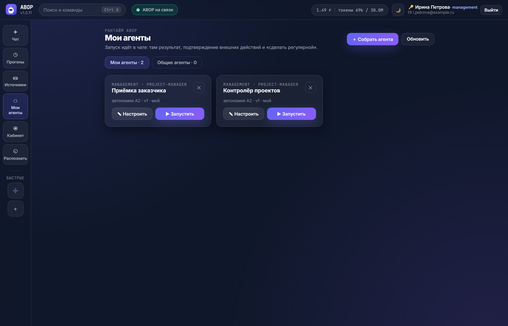
7.4 Кабинет
Личные настройки, которые влияют на все ваши разговоры:
- О себе — одна-две фразы о вашей роли и том, как отвечать. Например: «я руководитель отдела продаж; отвечай кратко, по пунктам, на „вы“; суммы в рублях». Это добавляется к каждому разговору.
- Память — факты, которые среда запомнила по вашим просьбам, с пометкой важности и сроком жизни. Любую запись можно удалить.
- Расход и квота — сколько токенов израсходовано и сколько осталось.
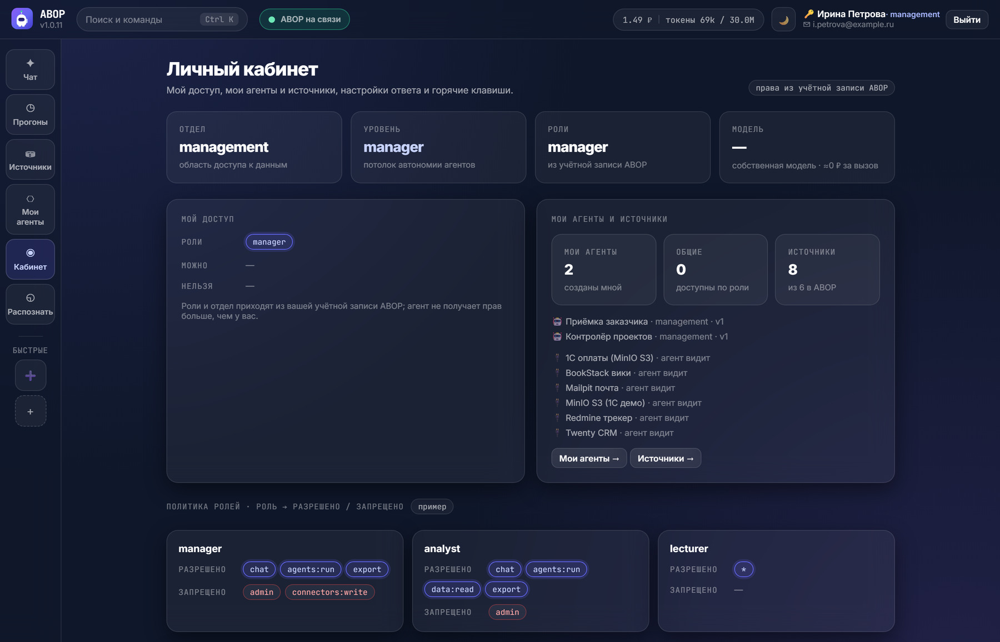
7.5 Распознать
Извлечение текста из изображений и сканов. Результат можно сразу отправить в задачу: удобно, когда пришёл скан акта или счёта, а работать нужно с содержимым.
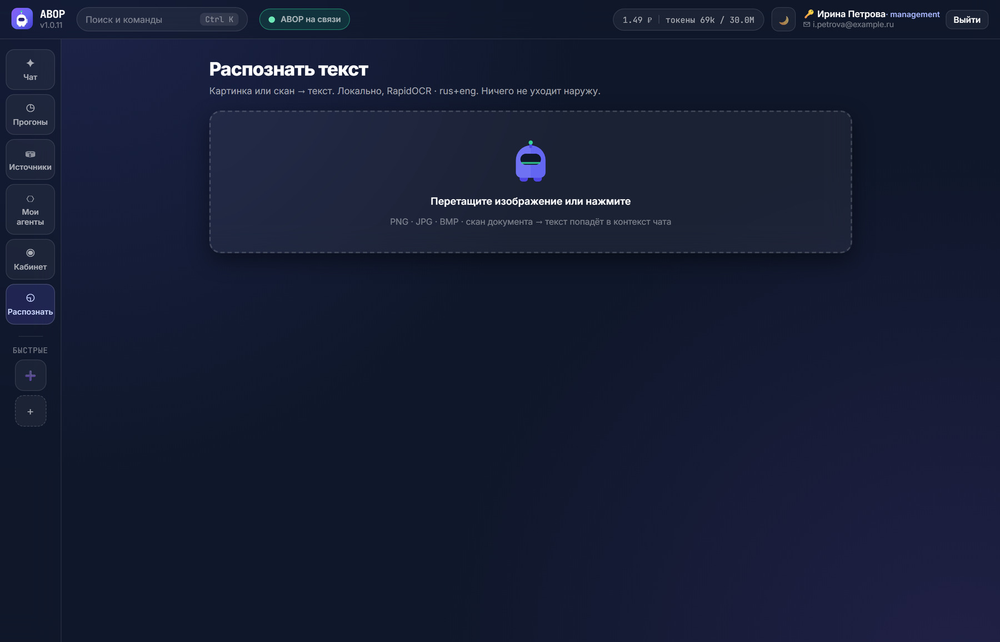
7.6 Поиск и команды
Ctrl + K открывает строку команд: переход между разделами, создание разговора, поиск по чатам и прогонам. Быстрее, чем мышью.
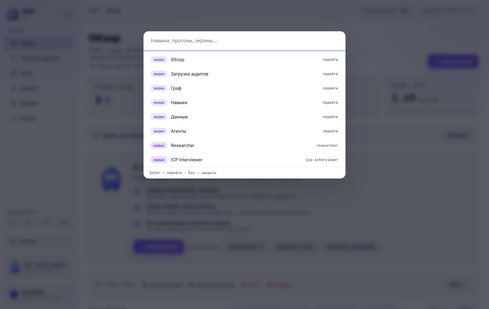
РАЗДЕЛ 8Веб: обзор и запуск прогона
Веб-интерфейс открывается по адресу, который выдал администратор. Здесь собрано всё, что нужно для сборки и разбора: агенты, навыки, данные, настройки и полный след прогонов.
8.1 Экран «Обзор»
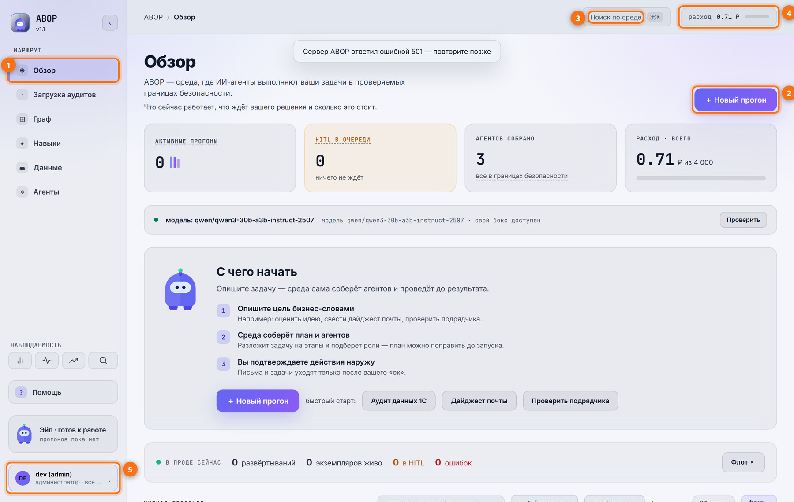
- 1Разделы. Обзор, Загрузка аудитов, Граф, Навыки, Данные, Агенты. Настройки и Админ-панель — в меню под вашим именем внизу.
- 2Новый прогон. Главное действие экрана.
- 3Поиск по среде (Ctrl+K). Ищет агентов, навыки, прогоны и разделы.
- 4Расход. Сумма за период и доля израсходованной квоты.
- 5Ваш профиль. Имя, уровень доступа и отдел; отсюда — переход в кабинет, настройки и админ-панель.
Четыре плитки под заголовком:
| Активные прогоны | сколько работ идёт прямо сейчас |
| HITL в очереди | сколько внешних действий ждёт вашего подтверждения |
| Агентов собрано | сколько агентов доступно и все ли в границах безопасности |
| Расход · всего | израсходовано из квоты периода |
Ниже — блок «С чего начать» с тремя быстрыми сценариями и журнал последних прогонов с поиском по агенту, запустившему и идентификатору.
8.2 Запуск прогона
Кнопка «Новый прогон» открывает окно запуска. Здесь вы описываете цель и, если нужно, ограничиваете расход.
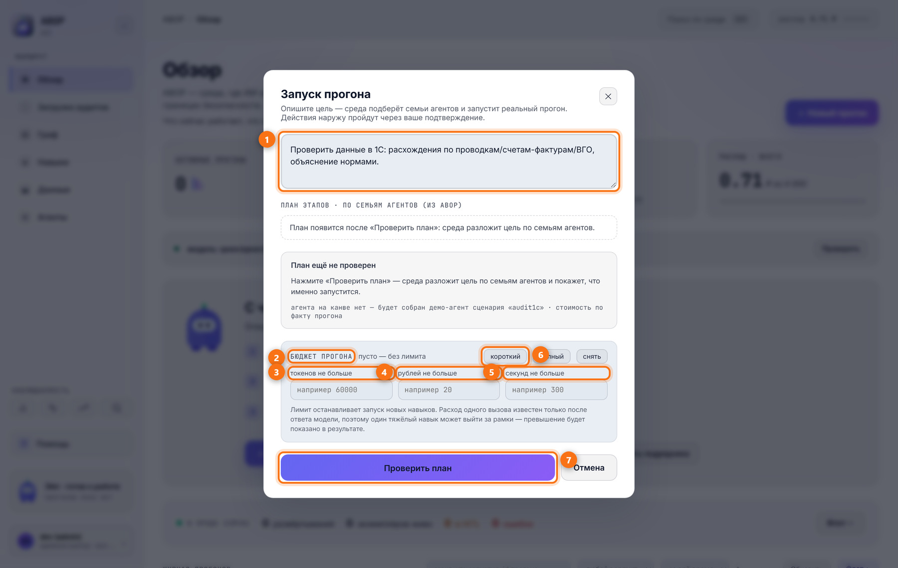
- 1Цель. Задача бизнес-словами. Среда сама разложит её по семьям агентов.
- 2Бюджет прогона. Пустые поля — без ограничений.
- 3Токенов не больше. Потолок расхода токенов на весь прогон.
- 4Рублей не больше. Потолок в деньгах по тарифу модели.
- 5Секунд не больше. Потолок по времени.
- 6Пресеты. «Короткий» — быстрая проверка, «полный» — рабочий прогон, «снять» — убрать все лимиты.
- 7Проверить план. Среда покажет, что именно запустится, до того как потратит деньги.
8.3 План этапов
«Проверить план» раскладывает цель по семьям агентов и показывает, что именно будет сделано: какие этапы, каким агентом, в каком порядке. План можно поправить до запуска — переформулировав цель.
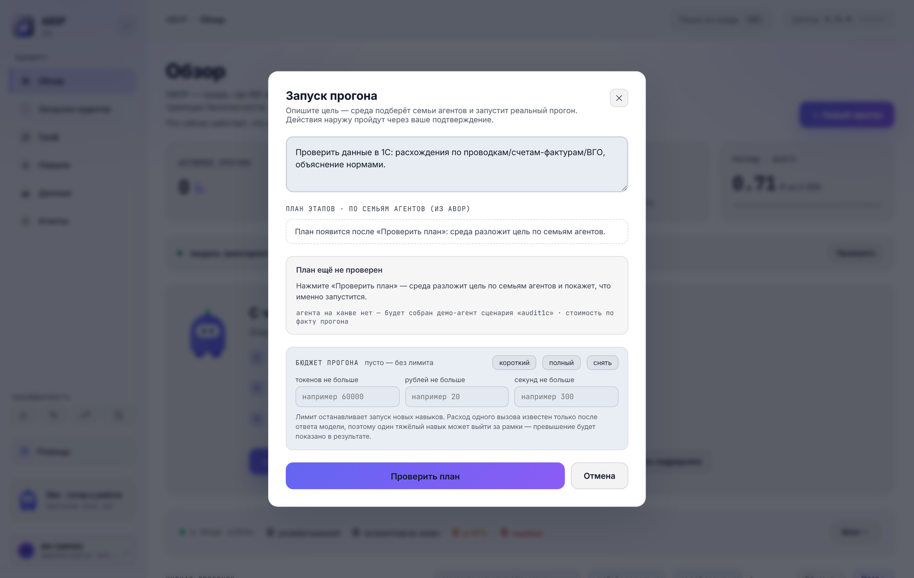
РАЗДЕЛ 9Веб: результат прогона и находки
Результат прогона — не отчёт «в общих словах», а разбор: что было сделано, на каких данных, сколько стоило и какие выводы получены.
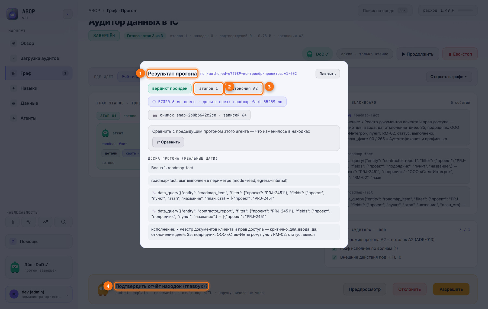
- 1Идентификатор прогона. По нему прогон находится в журнале и в поддержке.
- 2Этапов. Сколько волн графа было исполнено.
- 3Автономия. С каким уровнем самостоятельности работал агент.
- 4Подтверждение. Если агент готовил внешнее действие, оно ждёт здесь.
9.1 Что читать в результате
| Блок | Что означает |
|---|---|
| Вердикт | «пройден» — агент отработал в границах контракта; «есть замечания» — что-то нарушено, смотрите список проверок |
| Тайминги | сколько заняло всё и какой навык оказался самым долгим |
| Снимок данных | идентификатор и объём выборки, по которой считали. Если у ветвей разные картины данных — это будет сказано отдельно |
| Бюджет | лимит и фактический расход; если лимит остановил работу, перечислены незапущенные навыки |
| Расхождения | если две ветви дали разные выводы по одной находке — оба варианта, авторы и решение с обоснованием |
| Доска прогона | реальные шаги: какие запросы к данным делались, что получено, что решено |
| Сравнить | чем этот прогон отличается от предыдущего прогона того же агента |
9.2 Карточки находок
Кнопка «Карточки находок» раскрывает каждую находку отдельно: что нашли, где именно, чем это подтверждено и какая норма нарушена (если навык обязан ссылаться на нормы).
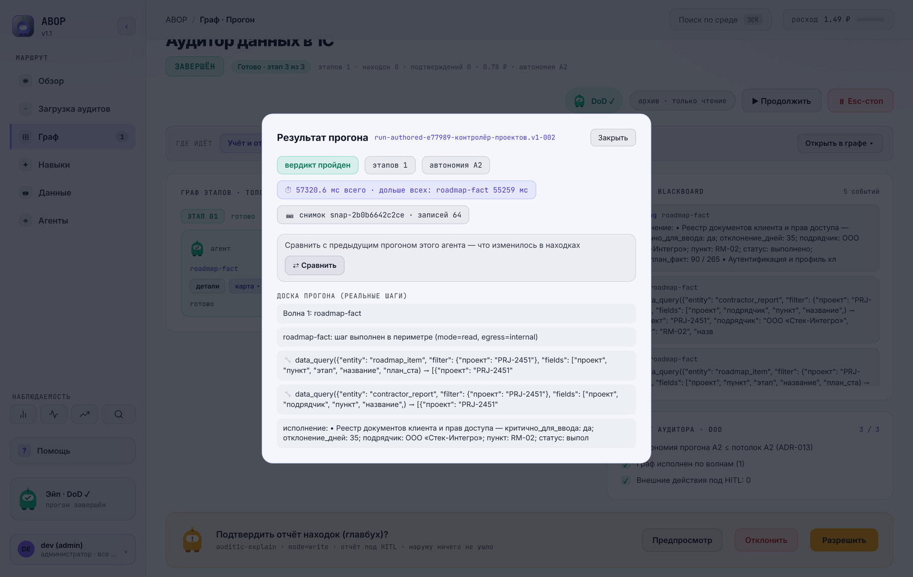
Классы находок:
| A | критично — требует решения сейчас |
| B | существенно — влияет на результат периода |
| C | заметно — стоит поправить |
| D | информационно |
РАЗДЕЛ 10Веб: агенты
Раздел «Агенты» — список всех собранных исполнителей с их состоянием.
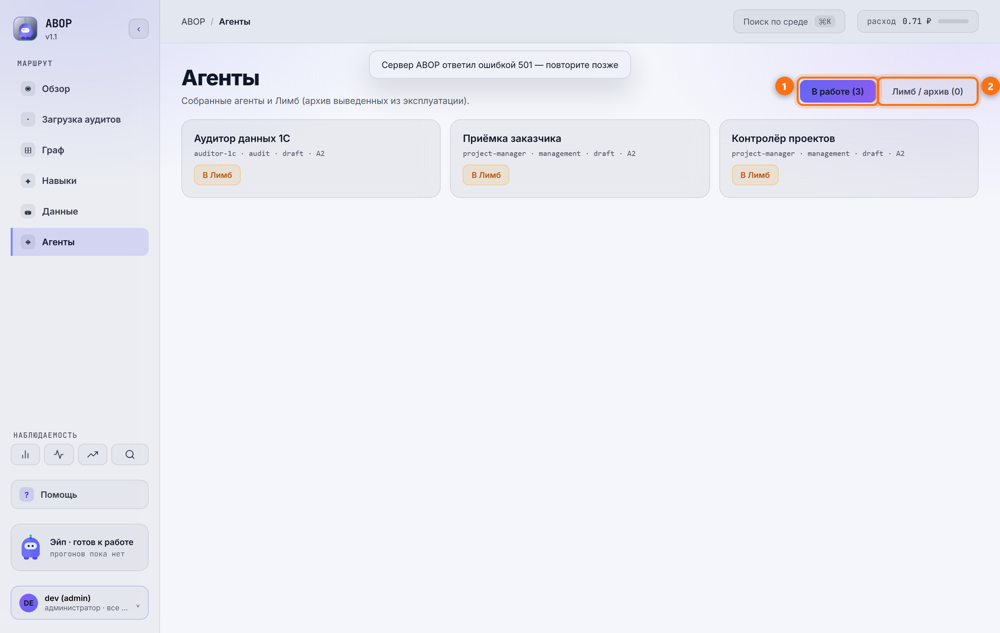
- 1В работе. Агенты, доступные для запуска.
- 2Лимб / архив. Выведенные из работы агенты — их можно вернуть.
У каждого агента видно: имя, отдел (семья), роль, версию, из каких навыков собран, уровень автономии и результат проверки границ. Нажатие открывает карточку с подробностями.
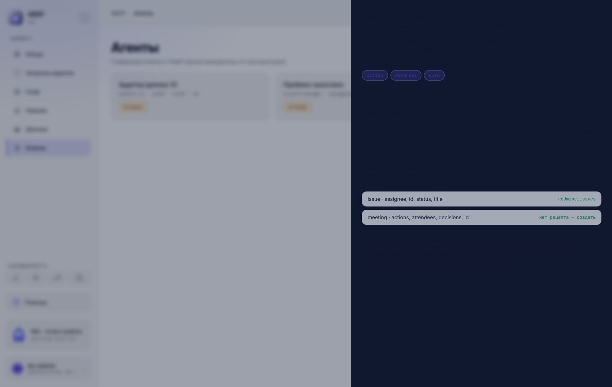
Что такое «Лимб»
Архив вместо удаления. Агент перестаёт быть доступным для запуска, но его прогоны, находки и история остаются: отчёты прошлых периодов не «портятся» задним числом. Вернуть агента из Лимба может тот, у кого есть права на изменение.
Версии агента
Каждое осознанное изменение создаёт новую версию (v1, v2, …). В журнале
прогонов видно, какой версией выполнена работа, — поэтому всегда можно сказать, по какой методике
получен результат полугодовой давности.
РАЗДЕЛ 11Веб: сборка агента на канве
Раздел «Граф» — место, где агент собирается из навыков и где видно, как он исполняется. Здесь же задаются границы полномочий.

- 1Строю. Режим сборки: тянем узлы, соединяем, настраиваем.
- 2Прогон. Режим наблюдения: те же узлы, но с ходом исполнения и доской.
- 3Конверт. Границы полномочий агента: что можно, чего нельзя, какой потолок автономии.
- 4Собрать и запустить. Сохраняет агента и сразу запускает.
11.1 Четыре состояния агента
Полоса этапов под режимами показывает зрелость агента: Черновик → Проверен → В прогоне → В проде. Переход дальше возможен, только когда предыдущий этап пройден: непроверенного агента нельзя вывести в работу.
11.2 Палитра узлов
| Группа | Узлы | Зачем |
|---|---|---|
| Старт | Стартовое событие | Что запускает агента: вручную, по расписанию, по событию системы, хендофф от другого агента, по условию |
| Входы | Входящий документ, Источник данных | Откуда берутся данные |
| Обработка | Навык, Условие, Слияние | Что именно делается и как ветвится |
| Выходы | Доставка, Подтверждение | Куда уходит результат и что требует вашего «ок» |
11.3 Инспектор узла
Правая панель показывает и правит выбранный узел. Для узла-навыка это: вход и выход по контракту, роль в потоке, уровень автономии, риск, требуется ли подтверждение человека. Для стартового события — тип запуска, расписание в формате cron, система-источник события и политика создания экземпляров.
11.4 Конверт: границы полномочий
Конверт — это правила, за которые агент не выйдет: какие режимы допустимы (только чтение, запись, внешнее действие), куда разрешён выход наружу, какой потолок автономии. Проверка перед сохранением не даст собрать агента, нарушающего конверт: например, поставить узел с внешним действием без подтверждения при потолке, который этого не допускает.
| Уровень | Что значит |
|---|---|
A0 | только подготовка, ничего не исполняет |
A1 | читает данные и делает выводы |
A2 | готовит изменения и документы, но наружу — через подтверждение |
A3 | исполняет согласованные действия в оговорённых системах |
A4 | полная автономия в своей области (в поставке не используется) |
РАЗДЕЛ 12Веб: навыки
Навык — это методика. В каталоге 58 навыков; каждый можно открыть, прочитать, настроить и проверить, с чем он совместим.
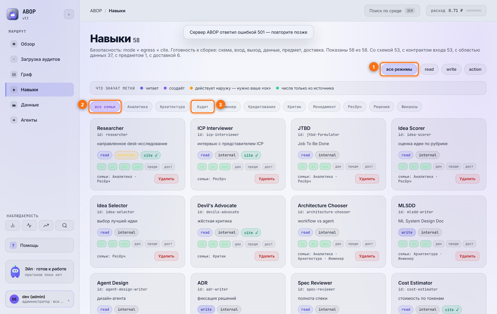
- 1Режим.
read— только читает;write— готовит изменения;action— совершает внешнее действие. - 2Семьи. Отделы, которым навык доступен.
- 3Быстрый фильтр по конкретной семье.
12.1 Карточка навыка

Из чего состоит карточка:
| Название и назначение | что делает навык человеческими словами |
| Шаблон результата | поля, которые навык обязан заполнить. Ответ проверяется по этой схеме: если поля не хватает, навык переспрашивают, а не принимают «как есть» |
| Лимит ответа и шаги инструментов | сколько токенов навык может потратить на ответ и сколько раз сходить за данными. Пусто — берутся общие значения из настроек |
| Контракт | вход (что нужно) и выход (что отдаёт). По нему среда проверяет, можно ли поставить этот навык после другого |
| Безопасность | режим, выход наружу, обязательность ссылок на нормы, формат вывода |
| Семьи | каким отделам навык доступен |
| Источники данных | какие сущности навык читает и каким рецептом они наполняются |
12.2 Контракт навыка простыми словами
Контракт отвечает на два вопроса: чем кормить и что получишь. Вход бывает четырёх видов:
| из данных | записи канонической сущности: roadmap_item, contractor_report |
| из навыка | результат другого навыка — так собираются цепочки |
| предмет работы | проект, договор, контрагент — то, что уточняется у вас |
| из контекста | ваша формулировка задачи и приложенные файлы |
Выход описывается списком: какой раздел результата отдаётся, по какому полю записи соединяются с другими. Благодаря контракту среда заранее знает, что цепочка исполнима, — а не выясняет это на середине прогона.
РАЗДЕЛ 13Веб: данные
Агенты не ходят в ваши системы напрямую. Между системой и агентом стоит рецепт: он забирает данные, приводит их к каноническому виду и кладёт в хранилище, откуда их читают навыки.
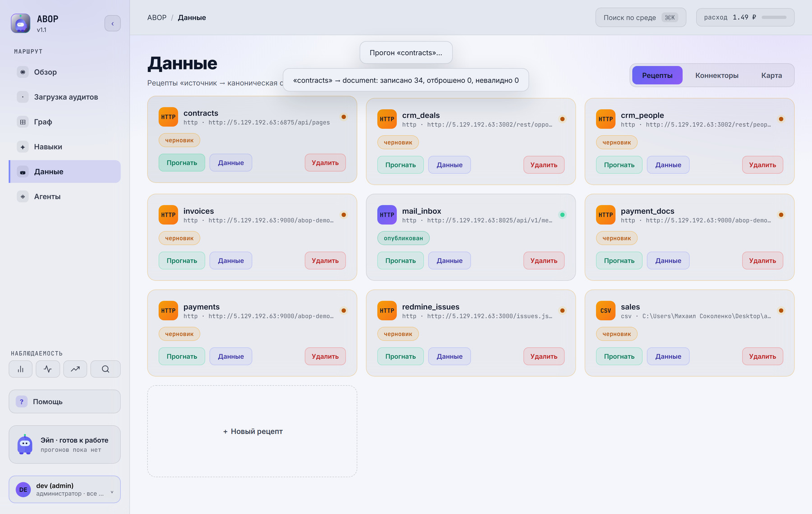
13.1 Три вкладки раздела
| Рецепты | правила «источник → каноническая сущность». У каждого: адаптер (HTTP, CSV, Postgres, S3…), адрес источника, статус (черновик или опубликован) |
| Коннекторы | подключения к системам: адрес, способ авторизации, проверка связи |
| Карта | какая сущность из какого источника наполняется и какие навыки её читают — видно разрывы: сущность объявлена, а рецепта нет |

13.2 Действия над рецептом
- Прогнать — выполнить рецепт сейчас. В ответ приходит честная сводка: сколько записано, сколько отброшено правилами, сколько не прошло проверку схемы.
- Данные — посмотреть, что реально лежит в хранилище после прогона.
- Удалить — убрать рецепт (данные остаются).
13.3 Коннекторы
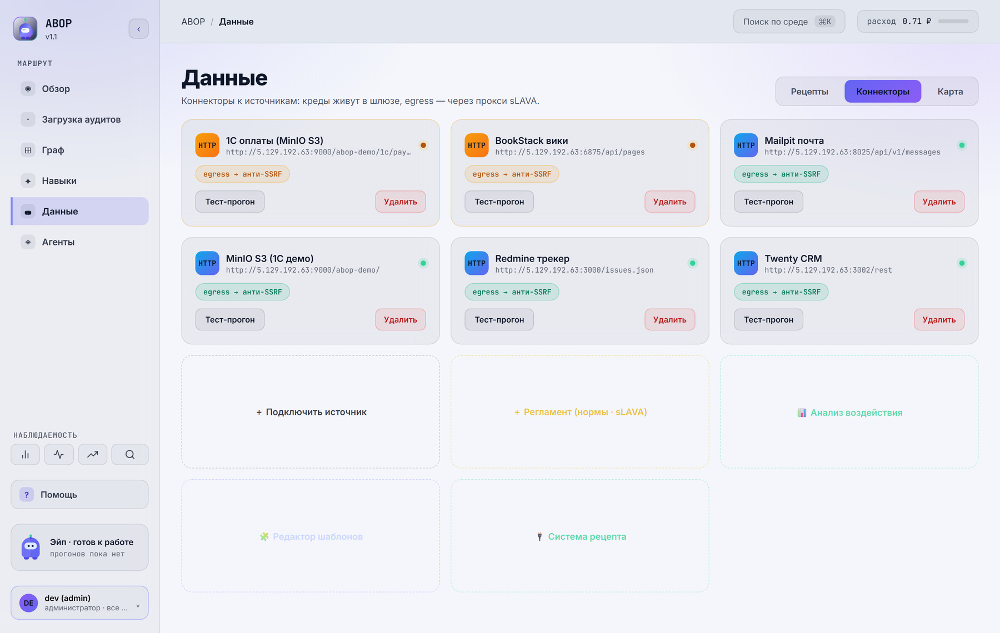
Коннектор описывает, как достучаться до системы: адрес, токен или логин, заголовки. Кнопка проверки делает реальный запрос и показывает, сколько строк вернулось, — настройка проверяется сразу, а не «когда-нибудь в прогоне».
РАЗДЕЛ 14Личный кабинет и память
Кабинет — ваша часть среды: чем вы пользовались, что среда о вас запомнила и сколько израсходовано.
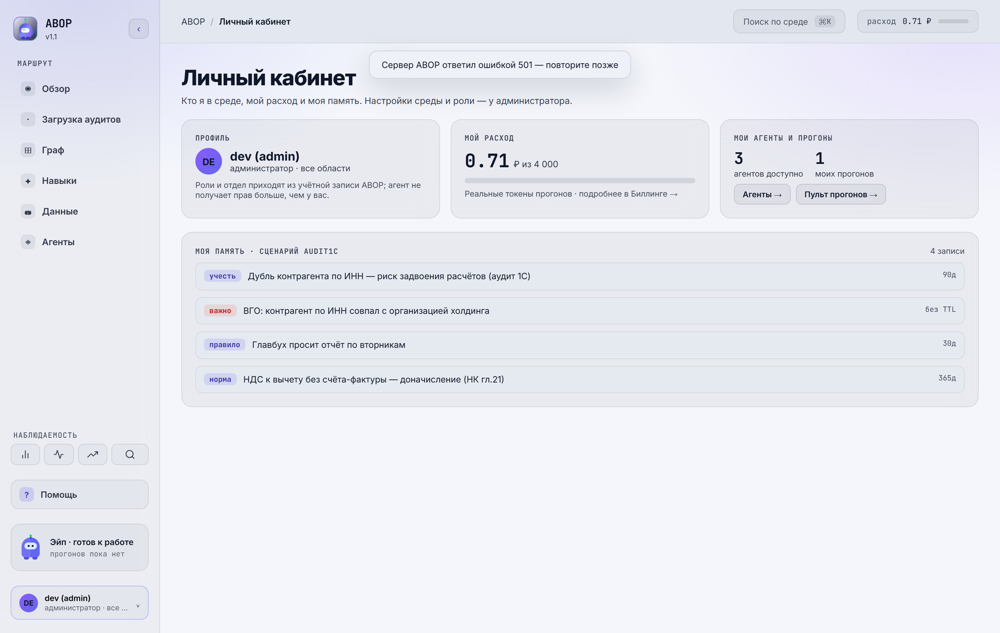
14.1 Память
Память — это короткие факты, которые среда учитывает в ваших задачах: «отчёты сдаём до 5 числа», «ООО „Вектор“ — наш подрядчик по складу», «суммы всегда в рублях без НДС». У каждой записи есть пометка важности и срок жизни.
| Пометка | Что означает |
|---|---|
| важно | учитывается всегда, не вытесняется |
| учесть | принимается во внимание, когда относится к задаче |
| правило | операционное правило вашей работы |
| норма | ссылка на регламент или норматив |
Память не всесильна и не должна быть: она не заменяет данные систем. Факт из памяти влияет на формулировки и приоритеты, но числа по-прежнему считаются по данным.
14.2 Расход и квота
В шапке всегда видно, сколько израсходовано. В кабинете — разбивка: по агентам, по дням, средняя цена вызова. Когда израсходовано больше 70% квоты, счётчик желтеет, больше 90% — краснеет.
14.3 Загрузка аудитов
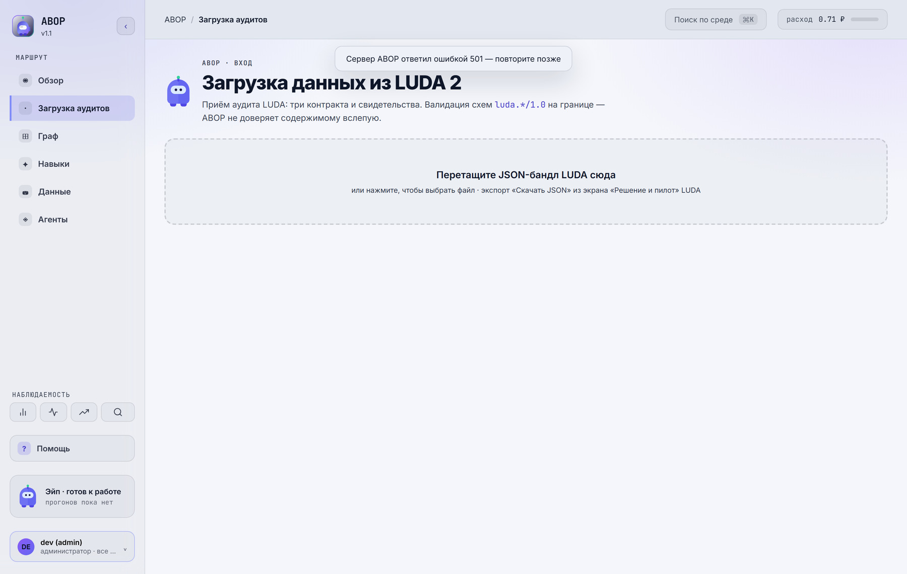
Если ваша организация ведёт обследование процессов во внешней системе, её выгрузку можно загрузить сюда: ABOP разберёт её и подготовит контракты, по которым потом собираются агенты. Файл перетаскивается в область загрузки или выбирается кнопкой.
РАЗДЕЛ 15Подтверждения: что уходит наружу
Любое действие, которое выходит за пределы ABOP — письмо, задача в трекере, страница в вики, запись в учётной системе — проходит через ваше подтверждение. Это не настройка, которую можно «забыть включить»: так устроена платформа.
15.1 Как это выглядит
Агент готовит действие и останавливается. В десктопе появляется блок «Требуют вашего подтверждения» со списком; в вебе — полоса внизу экрана прогона. В каждой заявке видно:
- что именно уйдёт — тема письма, заголовок задачи, название страницы;
- куда — адрес, проект трекера, книга вики;
- каким навыком подготовлено и в каком режиме;
- предпросмотр — полный текст того, что уйдёт.
15.2 Три решения
| Разрешить | действие исполняется, в карточку возвращается результат со ссылкой на созданный объект |
| Отклонить | действие не исполняется; можно указать причину — она сохранится в следе прогона |
| Отложить | заявка остаётся в очереди, её видно на «Обзоре» и в счётчике у раздела «Чат» |
15.3 Подтверждение пачкой
Когда заявок много и они однотипны (например, десять задач в трекере по десяти находкам), в десктопе есть «Подтвердить все…». Перед исполнением показывается сводка: сколько и куда уйдёт.
РАЗДЕЛ 16Бюджеты и лимиты
Два разных механизма, которые часто путают. Лимит ограничивает один вызов модели. Бюджет ограничивает весь прогон.
| Лимит | Бюджет | |
|---|---|---|
| Что ограничивает | один вызов: длину ответа, число шагов за данными, размер выборки | весь прогон: токены, рубли, секунды |
| На что влияет | на качество: слишком малый лимит обрывает рассуждение | на расход: после превышения новые навыки не запускаются |
| Где задаётся | Настройки → Прогон (общее) и карточка навыка (для одного навыка) | окно «Новый прогон» |
| Кто задаёт | администратор | тот, кто запускает |
16.1 Что вы видите в результате
Если бюджет был задан, в результате появляется строка вида «бюджет: токены 42 800 из 60 000 · деньги 1.20 из 20 ₽ · время 95 из 300 с». Если лимит остановил работу, под ней — отдельная плашка со списком незапущенных навыков и подсказкой, что делать: поднять лимит или сузить предмет работы.
16.2 Практические ориентиры
| Проверить настройку агента | пресет «короткий»: 30 000 токенов, 10 ₽, 180 с |
| Обычная рабочая задача | без лимита или пресет «полный»: 120 000 токенов, 40 ₽, 540 с |
| Большой разбор по многим предметам | без лимита, но с сужением предмета работы |
РАЗДЕЛ 17Регулярные запуски
Задачу, которую вы делаете каждую неделю, можно не ставить каждую неделю.
- Выполните задачу один раз Убедитесь, что результат такой, какой нужен: расписание повторяет именно эту настройку.
- Нажмите «Сделать регулярной» Кнопка на карточке прогона в десктопе.
- Задайте периодичность
Каждый день, каждую неделю по дням, каждый месяц. Для сложных случаев — выражение cron
(
0 8 * * 1— каждый понедельник в 8 утра). - Проверьте в «Мои расписания» Там видно, когда следующий запуск, когда был предыдущий и чем закончился. Расписание можно приостановить или удалить.
РАЗДЕЛ 18Если что-то пошло не так
Таблица типовых ситуаций: что видно, почему так и что сделать. Если ничего не подошло — приложите идентификатор прогона к обращению в поддержку, по нему поднимается весь след.
| Что вы видите | Почему | Что сделать |
|---|---|---|
| «нет связи с ABOP» в десктопе | Сервер недоступен или сеть отвалилась | Нажмите на индикатор — в окне будет адрес и код ошибки. Проверьте сеть; если адрес пустой — обратитесь к администратору |
| «Находок не выявлено» при явных проблемах в данных | Агент отработал, но данные не попали в его область: нет рецепта, рецепт не прогоняли, либо предмет работы сузил выборку слишком сильно | «Данные → Карта»: есть ли рецепт у нужной сущности. Затем повторите задачу, указав предмет точнее |
| «нет данных в store» в следе прогона | Сущность объявлена навыком, но хранилище по ней пусто | «Данные → Рецепты» → «Прогнать» нужный рецепт |
| «доступ к данным запрещён» | Система, из которой берутся данные, вне области доступа вашего отдела | Это не сбой, а правило. Запрос на расширение доступа — администратору |
| «Прогон остановлен бюджетом» | Лимит токенов, денег или времени исчерпан, часть навыков не запускалась | Поднимите бюджет в окне запуска или сузьте предмет работы |
| Агент подобран не тот | Фраза допускает несколько прочтений, уверенность подбора низкая | Нажмите «Агент не нужен» и переформулируйте, либо запустите нужного агента напрямую из «Мои агенты» |
| Результат смешал несколько проектов | Предмет работы не был указан, а данных несколько | Повторите задачу с номером проекта в тексте — среда сузит данные до него |
| «Ждёт человека» в расхождениях | Две ветви дали разные выводы по одной находке, и правило не может выбрать: спор о сроке, деньгах или предлагаемом мероприятии | Решение за вами: откройте оба варианта в результате прогона и выберите по существу |
| Ответ обрывается на середине | Мал лимит ответа навыка | Сообщите администратору: лимит поднимается в карточке навыка или в «Настройки → Прогон» |
| Задача висит в очереди | Сервер занят: у одного пользователя одновременно выполняется один прогон | Дождитесь — позиция в очереди видна. Отменить можно кнопкой на карточке |
РАЗДЕЛ 19Словарь терминов
- Агент
- Исполнитель конкретной работы: один или несколько навыков, имя, отдел, границы полномочий, версия.
- Автономия (A0–A4)
- Уровень самостоятельности агента: от «только готовит» до «исполняет согласованные действия».
- Блэкборд (доска прогона)
- Общая память прогона: выводы навыков с указанием автора. По ней видно, кто что утверждает и где ветви разошлись.
- Бюджет прогона
- Потолок расхода на один запуск: токены, рубли, секунды.
- Вердикт
- Итог проверки прогона на соответствие контракту: пройден или есть замечания.
- Веер
- Запуск одного агента сразу по многим предметам (например, по всем проектам) с единой сводкой.
- Доставка
- Куда уходит результат: чат, почта, трекер, вики.
- Каноническая сущность
- Единое имя для данных одного вида:
project,issue,document. Навык объявляет сущности, а не адреса систем. - Конверт
- Границы полномочий агента, заданные контрактом: режимы, выход наружу, потолок автономии.
- Находка
- Один конкретный вывод с привязкой к записи в данных.
- Навык
- Методика одной работы: текст, схема результата, контракт входа и выхода.
- Предмет работы (слот)
- Объект, по которому работает агент: проект, договор, контрагент, период.
- Прогон
- Один запуск агента со всем следом: данные, шаги, находки, стоимость, вердикт.
- Провенанс
- Происхождение данных: из какого источника, каким рецептом и когда получена запись.
- Рецепт
- Правило «источник → каноническая сущность»: что забрать, как преобразовать, что отбросить.
- Семья
- Отдел или направление, к которому относится агент. Определяет доступ к системам и данным.
- Снимок данных
- Зафиксированный объём и отпечаток выборки на момент старта: гарантия, что ветви одного запроса считали по одной картине.
- Цепочка
- Несколько агентов, выполняющихся по графу: результат одного становится входом другого.
- HITL
- Human in the loop — подтверждение человеком. Всё, что уходит наружу, ждёт вашего решения.